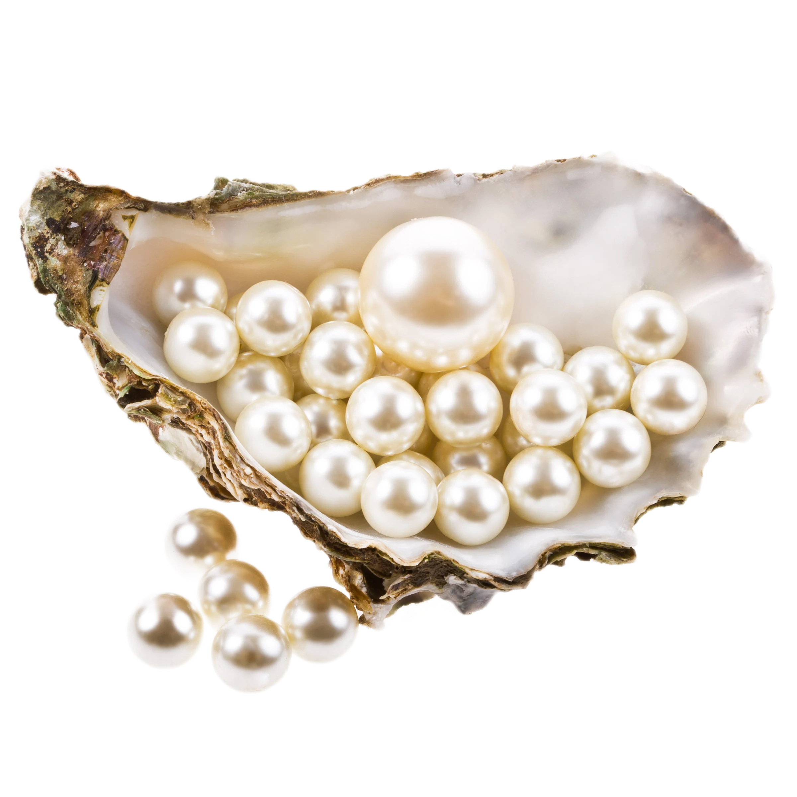

Добро пожаловать в магазин "Aquamarine"! Наша история началась много лет назад, когда молодая девушка по имени Анна, влюбленная в жемчуг и его красоту, решила превратить свое увлечение в профессиональное дело. Анна собрала все свои лучшие работы, которые покорили сердца многих жителей деревни и даже туристов. Ее украшения были так красивы, что они привлекли внимание не только местных жителей, но и знаменитостей. С годами магазин "Aquamarine" стал известен во всей стране благодаря таланту и преданности делу Анны. Ее украшения украшали знаменитости и были востребованы на модных показах. Магазин Анны стал символом красоты и изысканности. Сегодня мы рады представить вам наши работы, созданные с любовью и страстью к жемчугу. Мы надеемся, что наши украшения принесут вам радость и красоту, а также станут символом вашей индивидуальности и изысканности. Добро пожаловать в магазин "Aquamarine"!

Вернуться в начало